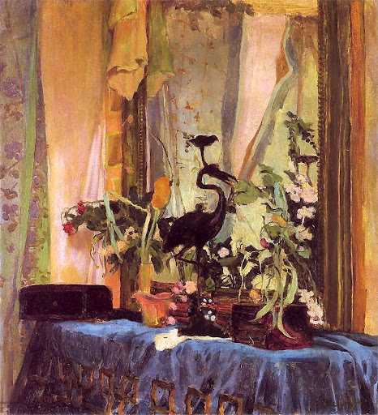
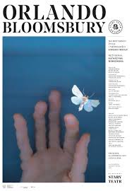
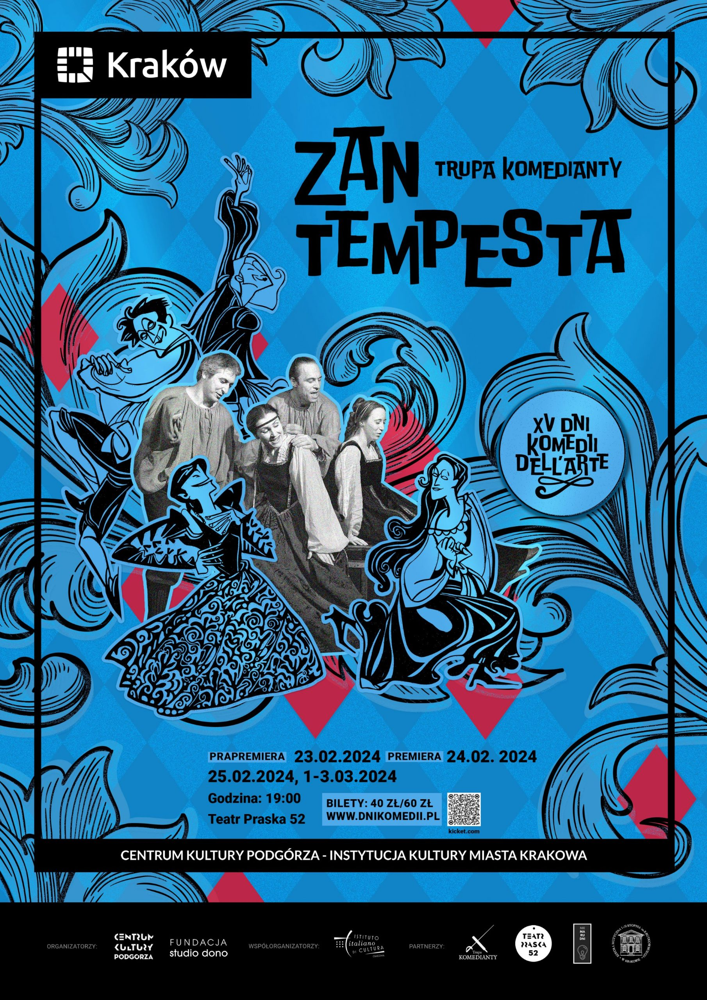
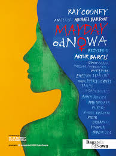
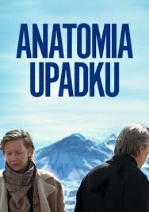
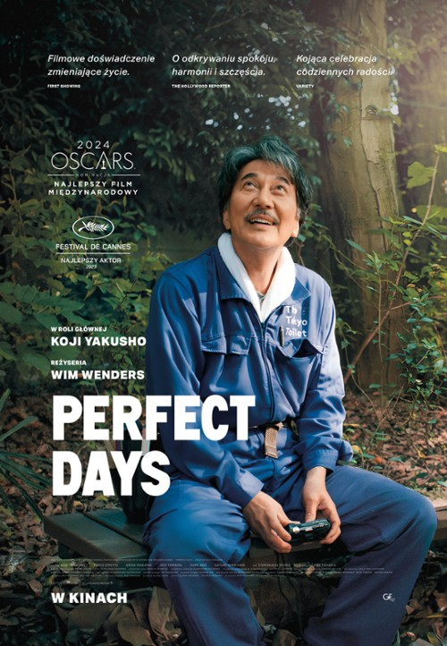
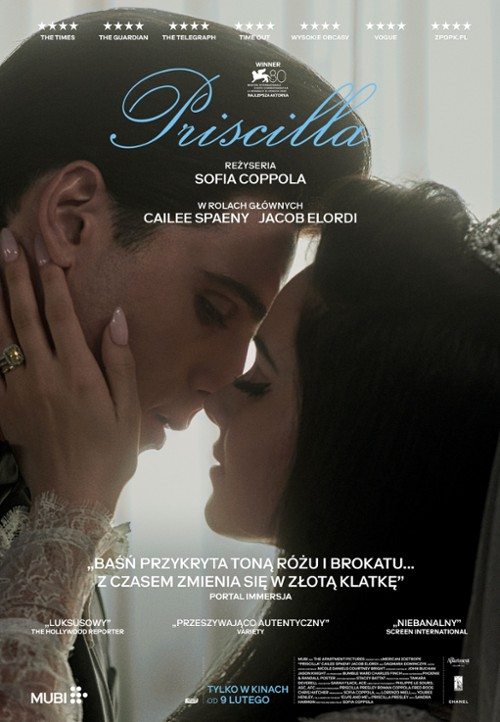
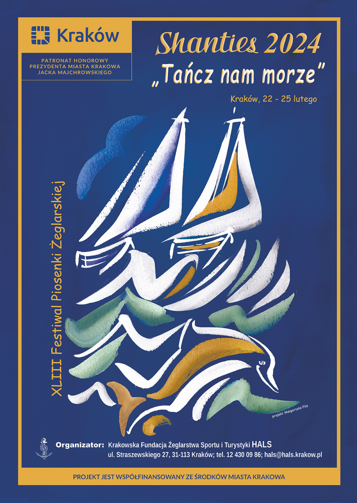
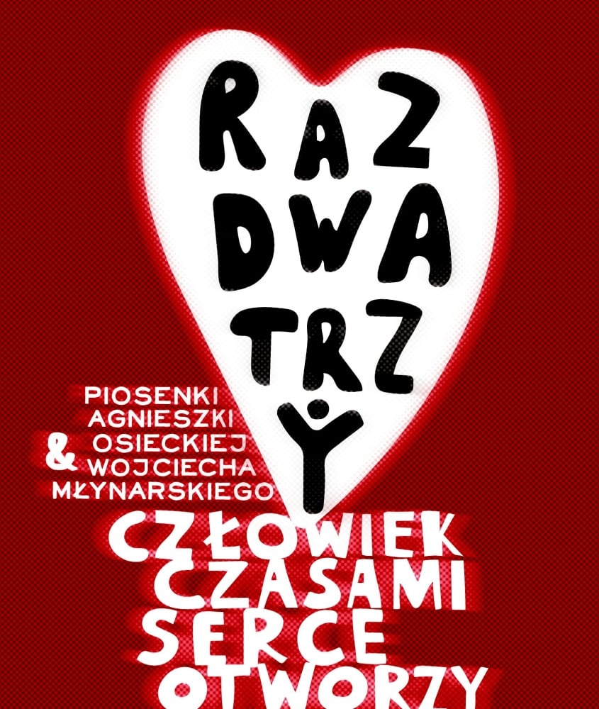

LUTY 2024
Pierwszy miesiąc nowego roku już za nami❄, więc witam wszystkich czytelników w kolejnej edycji Informatora kulturalnego! Mam nadzieję, że każdy z Was znajdzie coś dla siebie a udział w wydarzeniach urozmaici Wam wolny czas podczas tegorocznych ferii zimowych ☃. Jak co miesiąc zachęcam do przesyłania mi swoich opini o zaproponowanych wydarzeniach i wysyłania zdjęć, jeśli jakieś robiliście. W zakładce "Kontakt" możecie też przesłać formularz i zaproponować wydarzenia, którę będe mogła umieścić w marcowej edycji Informatora. Może ktoś z Was chciałby się pochwalić swoją wystawą lub nakręconym przez siebie filmem? Czekam na wasze wiadomości💗
WYDARZENIA
DROBIAZGI NA KOMINKU. POKAZ OBRAZU JÓZEFA MEHOFFERA ZE ZBIORU MUZEUM NARODOWEGO W POZNANIU
📅 06.02-08.04
📌 Ul. Krupnicza 26, Muzeum Narodowe w Krakowie
🕐 Pon zamknięte. Wt 10-18. Śr-Nd 10-16
💳 Wstęp w cenie biletu do oddziału.
❔ Jedna z niewielu martwych natur tego artysty w widoczny sposób pokazuje jego wrażliwość i sposób patrzenia na ten prozaiczny wycinek rzeczywistości jako na coś pięknego. Martwe natury Mehoffera są wyrazem istotnej cechy jego osobowości twórczej, czy w ogóle, charakteru – skłonności do pochylania się z uwagą nad drobnymi motywami codzienności, dostrzegania ich nie zawsze spektakularnej urody i dekoracyjnych walorów, niekiedy ukrytych mistycznych znaczeń, ważności wypływającej z faktu ich związku z określonymi osobami i sytuacjami.
📌 Ul. Krupnicza 26, Muzeum Narodowe w Krakowie
🕐 Pon zamknięte. Wt 10-18. Śr-Nd 10-16
💳 Wstęp w cenie biletu do oddziału.
❔ Jedna z niewielu martwych natur tego artysty w widoczny sposób pokazuje jego wrażliwość i sposób patrzenia na ten prozaiczny wycinek rzeczywistości jako na coś pięknego. Martwe natury Mehoffera są wyrazem istotnej cechy jego osobowości twórczej, czy w ogóle, charakteru – skłonności do pochylania się z uwagą nad drobnymi motywami codzienności, dostrzegania ich nie zawsze spektakularnej urody i dekoracyjnych walorów, niekiedy ukrytych mistycznych znaczeń, ważności wypływającej z faktu ich związku z określonymi osobami i sytuacjami.

SZTUKA CZARNA. NAJPIĘKNIEJSZE MEZZOITINTY Z KOLEKCJI CZARTORYSKICH
📅 10.10 - 24.03
📌 ul.Pijarska 15, Muzeum książąt Czartoryskich
🕐 Pon zamknięte. Wt-Nd 10-18
💳 Wstęp w cenie biletu do oddziału.
❔ Gabinet Rycin i Rysunków Książąt Czartoryskich MNK prezentuje zespół grafik wykonanych w technice mezzotinty, zwanej także „sztuką czarną”, pochodzących z okresu XVIII i XIX wieku. Mezzotinta z (języka włoskiego – półton) należy do technik rytowniczych, w których odbitki nie przypominają rysunku, lecz raczej dzieło malarskie utrzymane w tonacji czarno-białej.
📌 ul.Pijarska 15, Muzeum książąt Czartoryskich
🕐 Pon zamknięte. Wt-Nd 10-18
💳 Wstęp w cenie biletu do oddziału.
❔ Gabinet Rycin i Rysunków Książąt Czartoryskich MNK prezentuje zespół grafik wykonanych w technice mezzotinty, zwanej także „sztuką czarną”, pochodzących z okresu XVIII i XIX wieku. Mezzotinta z (języka włoskiego – półton) należy do technik rytowniczych, w których odbitki nie przypominają rysunku, lecz raczej dzieło malarskie utrzymane w tonacji czarno-białej.
BANKSY - WYSTAWA
📅 niedawno otwarte
📌 Berka Joselewicza 21, muzemu Banksy
🕐 Codziennie w godzinach od 11:00 - 17:00
💳 Wstęp to około 40 zł w zależności od zniżek
❔ Jako jedne z niewielu miast na świecie Kraków może poszczycić się wystawią poświęconą temu niezwykłemu artyście. Banksy tworzył i nadal tworzy sztukę uliczną o charakterystycznym dla niego stylu. Jego dzieła niosą przesłanie dotyczących ważnych aktualnych problemów i zagadnień wstrząsając całym światem. Sam artysta pozostaje jednak anonimowy i nieuchwytny.
📌 Berka Joselewicza 21, muzemu Banksy
🕐 Codziennie w godzinach od 11:00 - 17:00
💳 Wstęp to około 40 zł w zależności od zniżek
❔ Jako jedne z niewielu miast na świecie Kraków może poszczycić się wystawią poświęconą temu niezwykłemu artyście. Banksy tworzył i nadal tworzy sztukę uliczną o charakterystycznym dla niego stylu. Jego dzieła niosą przesłanie dotyczących ważnych aktualnych problemów i zagadnień wstrząsając całym światem. Sam artysta pozostaje jednak anonimowy i nieuchwytny.

SPEKTAKLE
ORLANO BLOOMSBURY

📅 15.02.2024
📌 ul.Jagiellońska 1, Teatr Stary
🕐 godzina 19:00
💳 Wstęp w cenie 60 zł
❔ Ten spektakl to teatralny pejzaż, w którym fabuła powieści splata się z życiorysem Virginii Woolf i jej bliskich. Opierając się na listach i dziennikach twórczynie i twórcy rekonstruują mapę relacji między postaciami należącymi do przełomowej w latach 20. grupy artystycznej Bloomsbury. W ramach rzeczywistości ukazanej w spektaklu odkrywamy przemiany, jakie przez lata zachodzą w grupie przyjaciół i jakim na przestrzeni dziejów podlega wiecznie młody, nieśmiertelny Orlando oraz otaczająca go rzeczywistość.
📌 ul.Jagiellońska 1, Teatr Stary
🕐 godzina 19:00
💳 Wstęp w cenie 60 zł
❔ Ten spektakl to teatralny pejzaż, w którym fabuła powieści splata się z życiorysem Virginii Woolf i jej bliskich. Opierając się na listach i dziennikach twórczynie i twórcy rekonstruują mapę relacji między postaciami należącymi do przełomowej w latach 20. grupy artystycznej Bloomsbury. W ramach rzeczywistości ukazanej w spektaklu odkrywamy przemiany, jakie przez lata zachodzą w grupie przyjaciół i jakim na przestrzeni dziejów podlega wiecznie młody, nieśmiertelny Orlando oraz otaczająca go rzeczywistość.
ZAN TEMPESTA
📅 23.02.2024, 24.02.2024
📌 Teatr Praska 52
🕐 godzina 19:00
💳 Wstęp w cenie 40/60 zł
❔ Jest rok 1601. Włoski zespół komedii dell’arte stacjonuje na przedmieściach Londynu. Pomimo starań nie udaje się im zdobyć widzów. Co więcej – część trupy zniechęcona niepowodzeniami odchodzi. Wśród pozostałej garstki wzbierają emocje spotęgowane tajemnicą, którą nosi w sobie szef trupy – Zan Tempesta. Włoscy komedianci starają się stworzyć spektakl, który spodoba się londyńskiej publiczności. Próbują zatem wykorzystać wątki charakterystyczne dla sztuk Szekspira.
📌 Teatr Praska 52
🕐 godzina 19:00
💳 Wstęp w cenie 40/60 zł
❔ Jest rok 1601. Włoski zespół komedii dell’arte stacjonuje na przedmieściach Londynu. Pomimo starań nie udaje się im zdobyć widzów. Co więcej – część trupy zniechęcona niepowodzeniami odchodzi. Wśród pozostałej garstki wzbierają emocje spotęgowane tajemnicą, którą nosi w sobie szef trupy – Zan Tempesta. Włoscy komedianci starają się stworzyć spektakl, który spodoba się londyńskiej publiczności. Próbują zatem wykorzystać wątki charakterystyczne dla sztuk Szekspira.

MAYDAY OD NOWA

📅 17.02.2024
📌 ul. Karmelicka 6, Teatr Bagatela
🕐 godzina 19:30
💳 Wstęp w cenie 50 zł
❔ Jackie Smith jest zwykłą taksówkarką, wiodącą szczęśliwe życie u boku… dwóch mężów: Marka i Barry’ego. Dzięki rygorystycznemu przestrzeganiu harmonogramu żaden z nich nawet nie podejrzewa istnienia tego drugiego. Wszystko działa idealnie do chwili, kiedy Jackie wplątuje się w napad i trafia do szpitala. Do akcji wkraczają dociekliwi policjanci, a cała sytuacja nabiera szaleńczego tempa. Jak potoczą się losy całej trójki, kiedy Mark i Barry dowiedzą się o sobie nawzajem?
📌 ul. Karmelicka 6, Teatr Bagatela
🕐 godzina 19:30
💳 Wstęp w cenie 50 zł
❔ Jackie Smith jest zwykłą taksówkarką, wiodącą szczęśliwe życie u boku… dwóch mężów: Marka i Barry’ego. Dzięki rygorystycznemu przestrzeganiu harmonogramu żaden z nich nawet nie podejrzewa istnienia tego drugiego. Wszystko działa idealnie do chwili, kiedy Jackie wplątuje się w napad i trafia do szpitala. Do akcji wkraczają dociekliwi policjanci, a cała sytuacja nabiera szaleńczego tempa. Jak potoczą się losy całej trójki, kiedy Mark i Barry dowiedzą się o sobie nawzajem?
KINO
ANATOMIA UPADKU
📅 pokaz przedpremierowy - 13.02.2024
📌 ul.Krowoderska 8, Kino Agrafka
🕐 godzina 17:00
💳 Wstęp w cenie 20 zł
❔ "Anatomy of a Fall" to portret moralnego upadku zarówno oskarżonej o morderstwo męża pisarki, jak i jej domniemanej ofiary, zmarłego Samuela. To również po części kino inicjacyjne o Danielu, który pokonuje drogę do dorosłości w zabójczym tempie. Nagły fabularny zwrot filmu zapowiada jego kolejny rozdział – trzymający w napięciu dramat sądowy, w którym reżyserka opowiada o naszym kolektywnym głodzie sensacji i relatywizowaniu różnych moralnych kodeksów. Gdy arogancki prokurator bombarduje Sandrę oskarżeniami, audytorium przypomina starożytne trybuny. Triet trzyma widza blisko swojej bohaterki, a jej samej nie oszczędza nieprzyjemności. W sądzie trwa polowanie na czarownice
📌 ul.Krowoderska 8, Kino Agrafka
🕐 godzina 17:00
💳 Wstęp w cenie 20 zł
❔ "Anatomy of a Fall" to portret moralnego upadku zarówno oskarżonej o morderstwo męża pisarki, jak i jej domniemanej ofiary, zmarłego Samuela. To również po części kino inicjacyjne o Danielu, który pokonuje drogę do dorosłości w zabójczym tempie. Nagły fabularny zwrot filmu zapowiada jego kolejny rozdział – trzymający w napięciu dramat sądowy, w którym reżyserka opowiada o naszym kolektywnym głodzie sensacji i relatywizowaniu różnych moralnych kodeksów. Gdy arogancki prokurator bombarduje Sandrę oskarżeniami, audytorium przypomina starożytne trybuny. Triet trzyma widza blisko swojej bohaterki, a jej samej nie oszczędza nieprzyjemności. W sądzie trwa polowanie na czarownice

PERFECT DAYS

📅 pokaz przedpremierowy - 24.02.2024
📌 ul. Lea 5, Kino Mikro
🕐 godzina 18:30
💳 Wstęp w cenie 18 zł
❔ Hirayama pracuje jako czyściciel toalet w Tokio. Wydaje się zadowolony ze swojego prostego i uporządkowanego życia. Poza codziennymi rutynowymi zajęciami lubi słuchać muzyki, czytać książki i fotografować drzewa. Seria nieoczekiwanych spotkań stopniowo odkrywa więcej zdarzeń z jego przeszłości
📌 ul. Lea 5, Kino Mikro
🕐 godzina 18:30
💳 Wstęp w cenie 18 zł
❔ Hirayama pracuje jako czyściciel toalet w Tokio. Wydaje się zadowolony ze swojego prostego i uporządkowanego życia. Poza codziennymi rutynowymi zajęciami lubi słuchać muzyki, czytać książki i fotografować drzewa. Seria nieoczekiwanych spotkań stopniowo odkrywa więcej zdarzeń z jego przeszłości
PRISCILLA
📅 15.02.2024
📌 Rynek Główny 27, Kino Pod Baranami
🕐 godzina 16:00
💳 Wstęp w cenie 21 zł
❔ Kiedy młodziutka Priscilla Beaulieu spotyka Elvisa Presleya, on jest już gwiazdą rock-and-rolla. W ich niewielu wspólnych chwilach staje się dla niej kimś zupełnie nieoczekiwanym: pierwszą wielką miłością, sprzymierzeńcem w samotności i wrażliwym najlepszym przyjacielem. Jednak z czasem jej życie przypudrowane i przykryte toną różu i brokatu zmienia się w złotą klatkę
📌 Rynek Główny 27, Kino Pod Baranami
🕐 godzina 16:00
💳 Wstęp w cenie 21 zł
❔ Kiedy młodziutka Priscilla Beaulieu spotyka Elvisa Presleya, on jest już gwiazdą rock-and-rolla. W ich niewielu wspólnych chwilach staje się dla niej kimś zupełnie nieoczekiwanym: pierwszą wielką miłością, sprzymierzeńcem w samotności i wrażliwym najlepszym przyjacielem. Jednak z czasem jej życie przypudrowane i przykryte toną różu i brokatu zmienia się w złotą klatkę

KONCERTY
KONCER CHÓRALNY FILHARMONII KRAKOWSKIEJ

📅 17.02.2024
📌 ul. Zwierzyniecka 1, Filharmonia Krakowska
🕐 godzina 18:00
💳 Wstęp w cenie 65 zł
❔ Austriacki kompozytor Anton Bruckner przez całe życie wracał do twórczości Giovanniego Pierluigiego Palestriny – jego wpływ i inspirację jego dziełami słychać m.in. w motetach czy Mszy e-moll nr 2. Stąd nic dziwnego, że twórczość tych dwóch kompozytorów – choć dzieliło ich ponad 250 lat – w pełnej harmonii wypełni koncert Chóru Filharmonii Krakowskiej prowadzonego przez Agnieszkę Franków-Żelazny.
📌 ul. Zwierzyniecka 1, Filharmonia Krakowska
🕐 godzina 18:00
💳 Wstęp w cenie 65 zł
❔ Austriacki kompozytor Anton Bruckner przez całe życie wracał do twórczości Giovanniego Pierluigiego Palestriny – jego wpływ i inspirację jego dziełami słychać m.in. w motetach czy Mszy e-moll nr 2. Stąd nic dziwnego, że twórczość tych dwóch kompozytorów – choć dzieliło ich ponad 250 lat – w pełnej harmonii wypełni koncert Chóru Filharmonii Krakowskiej prowadzonego przez Agnieszkę Franków-Żelazny.
PRISCILLA
📅 22.02.2024 - 25.02.2024
📌 al. Krasińskiego 34, Kino Kijów
🕐 godziny 18:00 - 22:00
💳 wstęp wolny
❔ „Tańcz nam morze” - pod takim mottem przewodnim w dniach 22–25 lutego 2024 roku odbędzie się 43. edycja Międzynarodowego Festiwalu Piosenki Żeglarskiej Shanties. Kolejne czterodniowe święto muzyki wiatru i wody oddalone 600 km od morza! Nieprzerwanie od 43 lat festiwal sprowadza do Krakowa z najdalszych zakątków Polski wielotysięczną publiczność, połączoną żeglarską i szantową pasją. Wspólnota pasji i doświadczeń integruje publiczność i sprawia, że niepowtarzalny klimat festiwalu to znak rozpoznawczy Shanties.
📌 al. Krasińskiego 34, Kino Kijów
🕐 godziny 18:00 - 22:00
💳 wstęp wolny
❔ „Tańcz nam morze” - pod takim mottem przewodnim w dniach 22–25 lutego 2024 roku odbędzie się 43. edycja Międzynarodowego Festiwalu Piosenki Żeglarskiej Shanties. Kolejne czterodniowe święto muzyki wiatru i wody oddalone 600 km od morza! Nieprzerwanie od 43 lat festiwal sprowadza do Krakowa z najdalszych zakątków Polski wielotysięczną publiczność, połączoną żeglarską i szantową pasją. Wspólnota pasji i doświadczeń integruje publiczność i sprawia, że niepowtarzalny klimat festiwalu to znak rozpoznawczy Shanties.

RAZ DWA TRZY: CZŁOWIEK CZASAMI SERCE OTWORZY

📅 23.02.2024
📌 al. Jana Pawła II 232, Nowohuckie Centrum Kultury
🕐 godzina 19:00
💳 Wstęp w cenie 75 zł
❔ Agnieszka Osiecka i Wojciech Młynarski posiedli unikatową umiejętność obserwacji ludzkiej potrzeby bycia kochanym. Koncert złożony z piosenek ich autorstwa nie ma służyć porównaniu ich talentów. To żywe muzyczne zestawienie odmiennego podejścia do uczuciowych usiłowań podejmowanych przez poszczególne bohaterki i bohaterów tych małych dzieł sztuki. Na raz, na dwa i na trzy śpiewa zespół Raz Dwa Trzy, który piosenki mistrzów gatunku przefiltruje przez własną (niemałą!) wrażliwość..
📌 al. Jana Pawła II 232, Nowohuckie Centrum Kultury
🕐 godzina 19:00
💳 Wstęp w cenie 75 zł
❔ Agnieszka Osiecka i Wojciech Młynarski posiedli unikatową umiejętność obserwacji ludzkiej potrzeby bycia kochanym. Koncert złożony z piosenek ich autorstwa nie ma służyć porównaniu ich talentów. To żywe muzyczne zestawienie odmiennego podejścia do uczuciowych usiłowań podejmowanych przez poszczególne bohaterki i bohaterów tych małych dzieł sztuki. Na raz, na dwa i na trzy śpiewa zespół Raz Dwa Trzy, który piosenki mistrzów gatunku przefiltruje przez własną (niemałą!) wrażliwość..